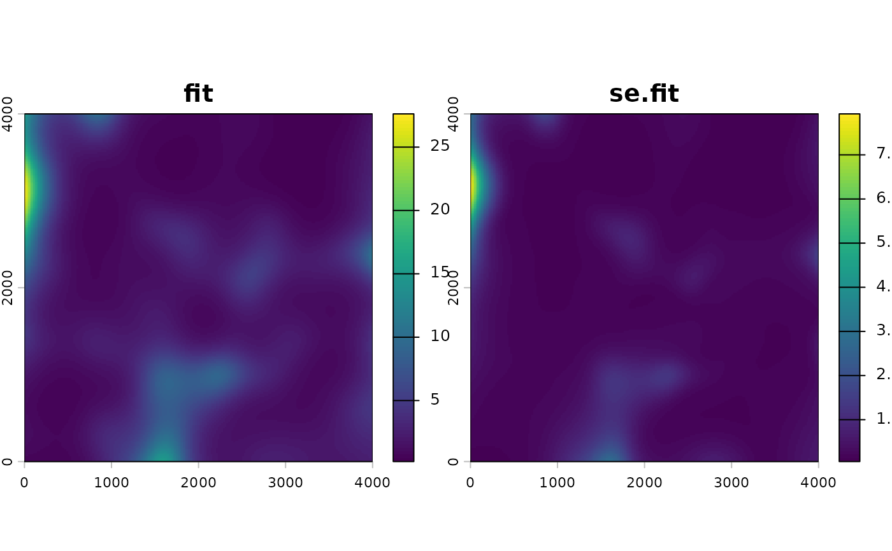

Predict the expected response, a linear predictor, or a native model
component from a multiScale_optim() fit, at the fitted rows, at new
points, or across a raster. Kernel-weighted covariates are recomputed at the
fitted scales of effect and standardized with the mean and standard
deviation of the fitted data. Fits from the analytic backends
("profile_glm" and "joint_nb2") can also carry joint uncertainty in the
kernel scales and the regression coefficients.
multiScaleR-prediction explains which quantity each route returns and
what its uncertainty includes. This page gives the arguments and the rules
for each backend. vignette("v09-estimates-and-intervals", package = "multiScaleR") compares conditional and joint intervals, and
vignette("v03-map-predictions", package = "multiScaleR") maps predictions.
Arguments
- object
A fitted
multiScaleRobject frommultiScale_optim(), from any backend:"profile_glm","joint_nb2","conditional_logit", the experimental"joint_mixed", or the default"refit".- newdata
Where to predict. One of:
NULL(the default), withkernel_inputs = NULL, to predict the rows used to fit the model.A data frame of new rows, supplied together with
kernel_inputs. It must hold every non-spatial variable in the model formula: fixed covariates, offset inputs, and grouping variables. Row names must match the point IDs inkernel_inputs, unless you supplyjoin_bykeys (refit backend). Kernel-weighted columns are computed for you and replace any columns of the same name.A
SpatRasterfromkernel_scale.raster(), to predict every cell. Leavekernel_inputsasNULL. See "Predict across a raster".
- kernel_inputs
A
multiScaleR_dataobject fromkernel_prep()for the new points. Prepare it with the fitted kernel, the same covariates and source or metric definitions, and the same binned or exact evaluation as the fit. Kernel means in the analytic, conditional logistic, and joint mixed backends need binned inputs (bin = TRUE). Its own distance unit conversion is applied, and the reported scales stay in map units. DefaultNULL. For the analytic backends, a model with no non-spatial covariates can omitnewdata, and a frame is built from the prepared point IDs. Conditional logistic fits with an optimized weighted surface SQ metric also need matching raw cell buffers and source or metric specifications here.- type
Scale or component to predict. For the analytic and joint mixed backends,
"response"(the default, the model's expected response) or"link"(the linear predictor). For"conditional_logit","response"(the default, a probability within each choice set),"link", or"risk". For native refits, any type the provider accepts. Whentypeis not supplied, a refit predicts the response for most models,"state"forunmarkedoccupancy and count models, and the linear predictor ("lp") for Cox models, which have no response probability here. Raster prediction from anunmarkedmodel needs an explicittype.- se.fit
Logical. If
TRUE, also return standard errors of the predicted mean, on the scale oftype. DefaultFALSE.- uncertainty
Which parameters the standard errors and intervals let vary.
"joint"(the default) includes the estimated kernel scales and shapes and their covariance with the coefficients. It is available only for the analytic backends at points."conditional"holds the kernel parameters at their estimates. Both include an estimated dispersion in the coefficient information when the family has one. Every other route needsuncertainty = "conditional"whenever it returns a standard error and stops otherwise.- interval
"none"(the default) or"confidence". Confidence limits describe the expected response, not a future observation. They are available only for the analytic backends at points.- level
Confidence level for
interval = "confidence", strictly between zero and one. Default0.95.- ...
Further controls. Which ones apply depends on the backend:
include_fixed: logical, defaultFALSE. SetTRUEto recompute declared fixed-radius predictors at new points. See "Recompute fixed-radius predictors". This is the only control that the analytic and conditional logistic backends use.join_by: refit backend only. A data frame of site keys, one row per prepared point inkernel_inputsorder, that lets severalnewdatarows share one site, for example one row per site and year. Seeprepare_unmarked_data()for the key rules.Native prediction controls for
"joint_mixed"and refit models, such asre.formorallow.new.levels. Put a control whose name matches a wrapper argument in a namednative_argslist, for examplenative_args = list(level = 0)for nlme population predictions. Native argument abbreviations are resolved with the provider's exact-first matching before any other check. They cannot replace the wrapper's verified inputs or bypass its checks.raster_args: a named list of raster controls. See "Predict across a raster".
Value
The class depends on the route.
Analytic backends, no standard errors or interval: a numeric vector of predictions on the scale of
type, named by row ID.Analytic backends with
se.fit = TRUEorinterval = "confidence": a list withfit(the predictions),se.fit(standard errors on the scale oftype),type, anduncertainty("joint"or"conditional"). Confidence intervals addlowerandupper, on the scale oftype, andlevel."conditional_logit": a named numeric vector, or withse.fit = TRUEa list withfit,se.fit,type, anduncertainty = "conditional"."joint_mixed": the native glmmTMB prediction vector, or withse.fit = TRUEits list withfitandse.fit.Native refits: the provider's own output, with a prediction_contract attribute that records the quantity and its uncertainty. For an
unmarkedmodel this is the vector of nativePredictedvalues, or withse.fit = TRUEthe native data frame withPredicted(the component on its natural scale),SE, and the confidence limitslowerandupper.Raster input: a
SpatRasterof predictions, with a standard-error layer when requested and available, andprediction_contractandprojection_contractattributes that record the controls used.unmarkedoutput keeps the nativePredicted,SE,lower, anduppercolumns as layers.
No route adds observation noise, except the native lm prediction
interval and the spaMM response variances (see "Native refits").
Choose the rows to predict
Fitted rows. Omit
newdataandkernel_inputs. The analytic backends rebuild the fitted design. Native refits return the provider's prediction for its fitted rows.New points. Run
kernel_prep()at the new points with the fitted kernel,max_D, and covariate definitions, then supply the matchingnewdata. For the refit backend, supply both or neither.A map. Smooth and standardize the raster with
kernel_scale.raster(), then pass the result asnewdata.
New kernel-weighted values are standardized with the fitted data's mean and
sample standard deviation. They are never standardized within the
prediction sample. Every non-spatial variable named in the formula must be
supplied in newdata. Values are not borrowed from the formula
environment. For the analytic backends, new factor levels, missing values,
and unmatched point IDs are errors. Use literal constants in transform
arguments, such as poly(z, 2). Preparing distance bins again at new
points can shift their representative distances slightly, so a prediction
at a fitted location can differ slightly from the fitted value.
Match the fitted formula
Fixed transformations, factor contrasts, and offsets follow the fitted
terms. For ordinary lm, glm, MASS::glm.nb, and time-fixed,
unpenalized coxph and clogit refits, prediction uses the original
fitted terms. A dot shortcut such as ~ . keeps its fitted meaning, and
new data columns never enter the design. Variables removed with a minus
term need no prediction column, while active interactions and offsets keep
their inputs. The original coefficients, covariance, factor coding, and
learned transformations are retained. Other native subclasses use their
provider's own prediction path. unmarked::pcount() (version 1.5.2)
rejects dot formulas when fitting, so write unmarked component formulas
explicitly.
Standard scale(), poly(), splines::ns(), and splines::bs() calls,
including namespace-qualified calls, keep their training constants (center
and spread, polynomial coefficients, spline knots) for supported LM, GLM,
GAM, lme4, glmmTMB, time-fixed unpenalized Cox, and ordinary unmarked
occupancy and count predictions. New rows never relearn them, and a single
new value or a constant raster does not define a new standard deviation.
Nested expressions such as I(scale(z)^2) and transformed formula offsets
recover one standard learner per evaluated predictor from its retained
attributes, using an aligned evaluated training frame. Missing or ambiguous
attributes, several learners in one predictor, and unsupported
transformations need precomputed training predictors or complete saved
prediction calls. Scaling arguments keep their original order and standard
abbreviations. Custom functions keep their own semantics. Legacy analytic
fits can recover this metadata, but numerical snapshots from
prepare_prediction() must be prepared again.
Analytic GLM backends
For "profile_glm" and "joint_nb2", standard errors use the delta
method. With uncertainty = "joint", they include the derivative of each
prediction with respect to the kernel scales and shapes, including how the
training mean and standard deviation change with scale. Confidence limits
are computed on the link scale and then transformed, and response-scale
standard errors are abs(d mu / d eta) times the link-scale standard
error. Binomial response predictions are probabilities.
Joint uncertainty is refused for fits at a parameter bound or with weak
identifiability. fit$uncertainty$reasons says why, and point predictions
and conditional uncertainty remain available. At the exact Poisson
boundary of a "joint_nb2" fit, point predictions and explicitly
conditional intervals hold both the scales and the Poisson dispersion
boundary fixed. Use vcov.multiScaleR() for the covariance matrices.
The native model in fit$opt_mod is a conditional GLM. Its own prediction
methods expect kernel predictors that are already standardized and do not
include scale uncertainty.
Conditional logistic backend
For "conditional_logit", type = "response" returns probabilities
normalized within each supplied choice set. They are not occurrence
probabilities or a utilization distribution. type = "link" returns the
linear predictor, including formula offsets, and differences within a set
describe relative selection. type = "risk" returns exp(link), a
relative selection score. Link and risk predictions at new points need
matching spatial inputs and every fixed formula input, but no choice-set
IDs. Response predictions also need explicit choice-set IDs, at least two
alternatives per set, and complete choice sets that you define.
se.fit = TRUE requires uncertainty = "conditional". Risk standard
errors are risk x SE(link), and response standard errors use the delta
method through the within-set normalization. Intervals and joint
uncertainty are unavailable. Formula offsets and training standardization
are preserved. The native fit$opt_mod prediction methods use their own
survival conventions and require already standardized covariates.
Joint mixed backend
For "joint_mixed", prediction delegates to the final native glmmTMB
model at the selected scales, with type = "response" or "link".
Standard errors require uncertainty = "conditional" and exclude scale
uncertainty. This wrapper provides no confidence intervals. For new rows,
supply both newdata and matching kernel_inputs, including every
fixed-effect, offset, and grouping variable. Kernel means need binned
summaries, and weighted surface SQ needs matching source specifications,
raw cell buffers, and row IDs. Spatial columns are recomputed with the
training mean and standard deviation.
Additional arguments, such as re.form and allow.new.levels, follow
native glmmTMB behavior. The default includes the fitted random effects,
and re.form = NA sets them to zero without integrating over their
distribution. Use native predict(fit$opt_mod, ...) for other glmmTMB
prediction types, or bind one with prepare_prediction().
Native refits
The default "refit" backend returns the provider's own prediction for
the model in fit$opt_mod, with spatial means and metrics recomputed from
matching source definitions, prepared rows, physical distance units, and
the selected scales. Unused prepared variables are ignored. Supply both
newdata and kernel_inputs, or omit both for the fitted rows. Explicit
join_by keys let several prediction rows share one site.
Standard errors require uncertainty = "conditional" and a provider that
supplies them. An unsupported native standard-error request raises an
error rather than returning zero. The wrapper's own interval must stay
"none". Native covariance, variance, and interval controls also require
uncertainty = "conditional", even with se.fit = FALSE, and cannot add
uncertainty in the kernel parameters. Cross-row native covariance, such as
glmmTMB's cov.fit = TRUE, needs point predictions, which keep the native
covariance output.
Linear models. For an ordinary
lmrefit,native_args = list(interval = "confidence", level = 0.9)returns native confidence limits for the mean, andinterval = "prediction"within that list returns limits for a future observation, including the residual variance. Both keep the nativefit,lwr, anduprcolumns for points and maps.Random effects. Native random-effect controls keep their meaning. For glmmTMB and lme4,
re.form = NAsets the random effects to zero. For nlme, usenative_args = list(level = 0). Zero-effect predictions can omit random-only grouping and slope inputs, but every fixed predictor and offset remains required. For partial lme4re.formformulas, supply the fixed predictors and the grouping and slope variables of the selected effects. Native validation still checks that the selected effects belong to the fitted model.spaMM. spaMM refits use their retained native model frames to verify fixed features. Zero and selected
re.formpredictions need only the fixed inputs and the selected random-effect inputs. The genericse.fitinterface is unavailable when the native method does not return a standard-error list. Nativevariancesandintervalsattributes keep their own scales and targets and require point predictions.fixefVarandpredVarare on the linear-predictor scale.residVarandrespVarare on the response scale and include observation noise.Cox models. Predictions are linear predictors (
"lp", also selected bytype = "link") or relative risks ("risk"). Neither is a probability. Use the"conditional_logit"backend for choice-set probabilities.
Predict from unmarked models
Name the component with type, such as "state" or "det".
multiScaleR-prediction lists what each component means. Supply
newdata in the row layout that native unmarked prediction expects for
that component, with row names that match the prepared point IDs or with
explicit join_by keys. See prepare_unmarked_data() for the key and
fixed-radius rules. Without
se.fit, the result is the vector of native Predicted values. With
se.fit = TRUE and uncertainty = "conditional", it is the native table
with confidence limits at the native level.
Ordinary occupancy and pcount state and detection predictions freeze
supported fixed scaling, polynomial, and spline terms from the original raw
covariates before site removal, including nested calls and formula
offsets. Keep those original covariates and the fitted designs. The
reconstructed designs and offsets must match the native fit before new rows
are evaluated. This check preserves the fitted target, but it cannot
detect edits to raw data that leave the evaluated design unchanged. Factor
contrasts use retained metadata, or original columns for factor main
effects when those recover the coding exactly. Other missing coding needs
explicit saved training contrasts.
For explicit data-frame rows, only the requested component's training
metadata is prepared. Raster chunks and effect curves reuse that
component's checked basis. A native unmarkedFrame input, or an omitted
newdata, keeps both components, because native missing-row removal
depends on both designs. Derived ZIP means and limits still use the native
zero-inflation estimate and covariance, and the full model's parameter
count and diagnostics are unchanged. Native observation rows, missing-site
handling, and confidence levels stay native, and frame subsets keep their
original known-group columns.
Conditional predictions with learned random-effect terms need precomputed
original training predictors. Zero-effect requests do not evaluate those
unused terms or need new random-only grouping or slope inputs. unmarked
treats every non-NULL re.form as zero random effects. It does not
select partial effects or integrate over them. Other unmarked classes
keep their provider's prediction requirements.
Qualified gdistremoval() predictions keep the original "lambda",
active "phi", "dist", and "rem" component recipes, with their native
site, primary-period, and removal-interval rows. Native C and TMB designs
are checked before frozen scaling, polynomial, spline, or factor
interaction terms are used. Points, prepared outputs, effect curves, and
raster chunks share these terms. Rows for one component need only that
component's inputs, and native GDR frames keep their native layout and
missing-covariate checks. Native component covariance and conditioning are
unchanged, and zero effects do not integrate over unknown groups.
Recompute fixed-radius predictors
By default, declared fixed-radius predictors are inputs you supply in
newdata. For the analytic, conditional logistic, joint mixed, and refit
backends, include_fixed = TRUE recomputes them from matching spatial
inputs instead. Their original prepared values and training means and
sample standard deviations must first be verified against the retained
native model frame. Source, metric, radius, kernel, resolution, buffer
extent (max_D), and observation-to-site alignment must match. Fixed radii
add no scale parameters or uncertainty.
Predict across a raster
First call kernel_scale.raster() with the fitted object,
scale_center = TRUE, and match_buffer = TRUE. match_buffer = TRUE
needs square cells in a projected or local planar coordinate reference
system, at the prepared resolution.
Modeled fixed-radius metrics also require include_fixed = TRUE there.
Set categorical and other non-spatial scenario values with site_values,
and offset inputs with offset_values. A simple log() offset defaults to
a raw value of 1 and a direct offset to 0, and a compound offset such as
offset(log(effort * duration)) needs explicit values. Logical predictors
are coded 0 and 1 in the raster and regain their fitted type during
prediction. The descriptor attached to the raster checks scales, source and
metric definitions, normalization, and support against this fit. It does
not rebuild a lost descriptor or establish that the maps have the right
scientific provenance. Recompute the raster after editing cells or saving
it in a file format that drops R attributes.
Raster standard errors are conditional on the selected kernel parameters,
with interval = "none". Analytic GLM maps use the same coefficient
information as point predictions. Other maps use native prediction, and
native matrix components return one layer per column, with standard-error
layers in the same column order. Cox maps default to linear predictors.
Conditional logistic maps need type = "link" or "risk", because choice
probabilities need complete point choice sets. unmarked maps need an
explicit component. Native cross-row covariance (cov.fit = TRUE) and
spaMM variance or interval attributes are rejected, because raster chunks
cannot keep them. Supply native controls in native_args. A raster
prediction from one set of selected scales is not a Bayesian posterior map.
The raster_args list accepts filename, overwrite, wopt, const,
cores, na.rm, and field_geometry. cores defaults to one worker,
and clusters created internally are stopped on exit. field_geometry
takes a checked response_field_geometry() descriptor, as described in
"Spatial response fields". Rasterization, distance binning, and partial source
coverage remain separate approximation choices.
Spatial response fields
Native glmmTMB exponential, Gaussian, and Matern response fields keep their
provider predictions and mean-prediction standard errors at the selected
kernel scales. Conformance checks cover Gaussian, log-Poisson,
logit-binomial, log-NB2, and log-Gamma responses with one shared projected
field without a year effect. Supply the native coordinate factor and
grouping columns explicitly, including new glmmTMB::numFactor()
positions and allow.new.levels = TRUE when appropriate. A field's
covariance range is distinct from the ecological kernel scale.
re.form = NA sets the response random effects to zero without
integrating over their distribution. These checks do not qualify scale
recovery, interval coverage, or a spatial field in the "joint_mixed"
likelihood. A full raster needs matching field coordinates in each cell,
which a constant site scenario does not provide. Use explicit native point
rows or raster_args = list(field_geometry = ...) for coordinate-aware
maps. That route requires a matching projected coordinate reference
system, uses cell-center coordinates and one worker, limits native batch
expansion to an explicit working-memory budget, and needs
allow.new.levels = TRUE in native_args for new positions.
Identified native TMB gdistremoval() response-field models keep their
conditional component predictor and full joint covariance through the
unmarked adapter. New abundance coordinates require the fitted projected
coordinate reference system. Field maps need a checked geometry descriptor
and type = "lambda", and they run on one worker, including zero-effect
references. The residual field variance at new locations is distinct from
observation noise and from ecological-scale uncertainty.
GAM and BAM predictions
GAMs with several linear predictors keep each component's terms,
coefficient spans, and native output columns. Response columns keep the
fitted family's meaning. For example, the second mgcv::gaulss() response
column is a reciprocal standard deviation, and multinomial response columns
are category probabilities. For mgcv::ziplss() response predictions, the
native mean is unchanged, and its standard error propagates the full native
coefficient covariance through both predictors, keeping signed
cross-covariance. It omits count noise and ecological-scale uncertainty.
Custom family prediction hooks remain guarded.
Native term selection, exclusions, and smoothing-parameter covariance
requests (unconditional) keep their native behavior, and none adds
uncertainty in the selected scales. Package predictions keep the saved
factor coding of interaction-only terms when session contrast options
change. BAM predictions keep the native discrete and block algorithms,
restore fitted coding in serial and native worker calls, and pass explicit
term exclusions and controls such as iterms.type and unconditional to
those workers. Worker mgcv versions must match the parent. Optimized
discrete predictions for binomial and Poisson BAMs keep their native
values, warnings, and output geometry across point, snapshot, and raster
routes, including the native warning that resets iterms to terms. Set
discrete = FALSE for ordinary iterms. Native warnings, such as one for
selecting terms from a model without parametric coefficients, reach the
calling session with their native meaning.
See also
multiScaleR-prediction for the quantity and uncertainty of each
route, vcov.multiScaleR() for the covariance matrices,
prepare_prediction() for repeated summaries of fixed rows,
prepare_unmarked_data() for keyed unmarked prediction rows,
kernel_scale.raster() for prediction rasters, plot_marginal_effects()
for effect curves, and multiScale_optim().
Examples
## Running example: counts at 100 survey points and two landscape layers
data("landscape_counts")
data("surv_pts")
pts <- terra::vect(surv_pts)
land <- terra::rast(system.file("extdata", "landscape.tif",
package = "multiScaleR"))[[c("land1", "land2")]]
## The simulated layers are in meters but carry no coordinate reference
## system. Declare a local planar one so raster prediction can check cells.
terra::crs(land) <- "local"
terra::crs(pts) <- "local"
## bin = TRUE stores the distance bins that the analytic backend needs
inputs <- kernel_prep(pts, land, max_D = 1700, kernel = "gaussian",
bin = TRUE, verbose = FALSE)
dat <- data.frame(landscape_counts, inputs$kernel_dat)
start <- glm(counts ~ site + land1 + land2, family = poisson(), data = dat)
fit <- multiScale_optim(start, inputs, backend = "profile_glm",
n_cores = 1, verbose = FALSE)
## Expected counts at the first three survey points
predict(fit)[1:3]
#> 1 2 3
#> 0.9066805 2.5784219 4.6877074
## 95% limits for the expected count. Joint limits let the scales vary,
## conditional limits hold them at their estimates.
joint <- predict(fit, interval = "confidence")
cond <- predict(fit, interval = "confidence", uncertainty = "conditional")
round(cbind(expected = joint$fit,
joint_lower = joint$lower, joint_upper = joint$upper,
cond_lower = cond$lower, cond_upper = cond$upper)[1:3, ], 2)
#> expected joint_lower joint_upper cond_lower cond_upper
#> 1 0.91 0.67 1.23 0.67 1.23
#> 2 2.58 1.64 4.07 1.83 3.63
#> 3 4.69 3.59 6.12 3.85 5.70
## Back-transform a link-scale prediction yourself: exponentiate the
## estimate and its limits, never the standard error. This reproduces the
## joint limits for the first point.
eta <- predict(fit, type = "link", se.fit = TRUE)
exp(eta$fit[1] + c(-1, 1) * qnorm(0.975) * eta$se.fit[1])
#> [1] 0.669071 1.228673
## New points: prepare their landscape with the fitted settings, then give
## site values whose row names ("1", "2", "3") match the prepared point IDs
new_inputs <- kernel_prep(pts[1:3], land, max_D = 1700, kernel = "gaussian",
bin = TRUE, verbose = FALSE)
new_sites <- data.frame(site = c(-1, 0, 1))
predict(fit, new_sites, new_inputs, se.fit = TRUE)
#> $fit
#> 1 2 3
#> 0.6399094 1.8208897 5.2991735
#>
#> $se.fit
#> 1 2 3
#> 0.1278956 0.3456957 0.8556013
#>
#> $type
#> [1] "response"
#>
#> $uncertainty
#> [1] "joint"
#>
## Map the expected count and its conditional standard error. The site
## layer holds the mean of site, so the map describes an average site.
layers <- kernel_scale.raster(land, multiScaleR = fit, scale_center = TRUE,
match_buffer = TRUE, verbose = FALSE)
count_map <- predict(fit, layers, se.fit = TRUE, uncertainty = "conditional")
terra::plot(count_map)
